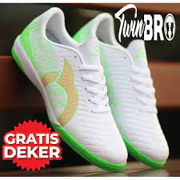
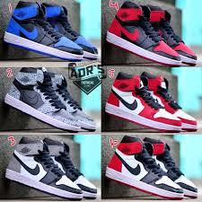
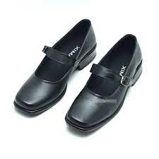

| 1 |
Sepatu Futsal |
Rp 120.000 |
40 pcs |
Sepatu futsal dirancang untuk mendukung gerakan kamu di atas permukaan lapangan yang keras dan cenderung licin. Meski sekilas desain sepatu futsal mirip dengan sepatu lari, hindari memakai sepatu lari saat kamu bermain futsal. Sepatu lari punya bantalan tumit yang lebar dan cukup tebal |
 |
| 2 |
Sepatu Jordan |
Rp 300.000 |
50 pcs |
Sepatu Jordan ini bisa digunakan oleh berbagai kalangan baik anak-anak maupun orang dewasa karena memiliki berbagai ukuran dan warna juga memiliki kualitas yang bagus |
 |
| 3 |
Sepatu Pantofel |
Rp 90.000 |
30 pcs |
Pantofel adalah macam-macam jenis sepatu bermodel formal. Pantofel biasanya digunakan saat menghadiri acara formal seperti pernikahan, acara resmi atau pergi ke kantor |
 |